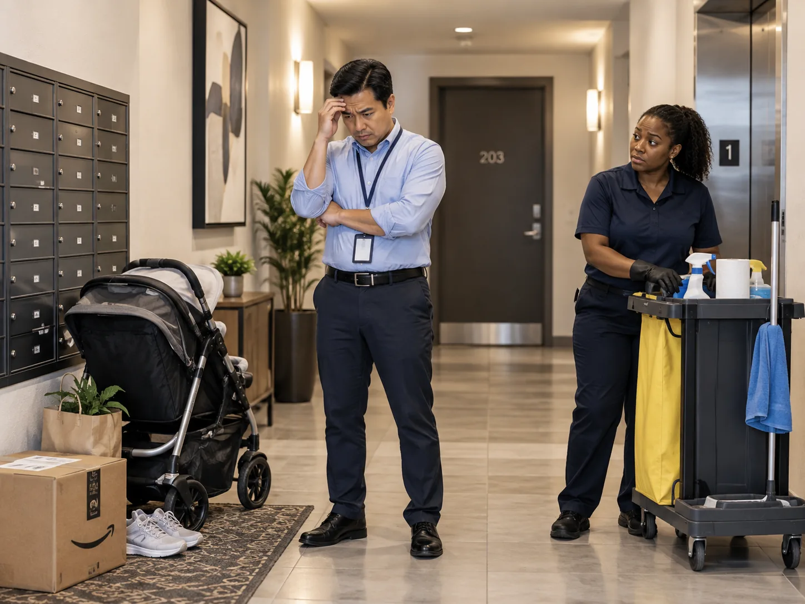

Clean Spaces
I manage an apartment building and tenants keep leaving things in the common areas. I don’t want my staff dealing with it, how should I handle this?

Give cleaners a clear instruction for what they remove and what they report instead.
Define what counts as routine cleaning
Normal common area service might include sweeping, mopping, vacuuming, wiping surfaces, cleaning glass, removing approved trash, and maintaining entrances or laundry areas. Personal furniture, packages, strollers, shoes, or abandoned belongings can fall outside that normal scope.
Create a report instead of an argument
If cleaners are not supposed to move personal property, give them a simple process for reporting what they find. A photo, unit location, and time stamp can allow management to handle the issue without putting the cleaner in the middle of a tenant dispute.
Use property rules for repeat problems
If residents repeatedly leave items where they should not, the long term solution is usually consistent communication and enforcement from management. The cleaning crew can help keep the area clean, but they should not be expected to solve a policy issue.
Keep the cleaning scope clear
A written scope protects both the property manager and the cleaning team. Everyone should know which trash is removed, which items are left in place, how spills are handled, and who is contacted when the hallway cannot be cleaned because belongings are in the way.